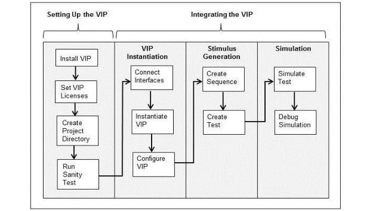

AXI UVM Getting Started : Overview of the Getting Started Guide
Overview of the Getting Started Guide
This Getting Started Guide presents information about integrating the VC VIP for AXI (referred to as VIP) into testbenches that are compliant with the SystemVerilog Universal Verification Methodology (UVM). Figure 1‑1 is the VIP integration and test work flow presented in this document. The steps for setting up the VIP are documented in the VC Verification IP Installation and Setup Guide. This guide is available on the SolvNetPlus Download Center (click here -> VC VIP Library -> U-2023.03-> Installation Guide) and in the VIP installation at the following location:
Based on the AMBA Progressive Terminology updates, you must interpret the term Master as Manager and Slave as Subordinate in the VIP documentation and messages.
The VIP setup should be completed before executing the steps in this document.
Figure 1‑1 VIP Integration and Test Work Flow

You are assumed to be familiar with the AMBA AXI protocol and UVM. For more information on the VIP, refer to the VC Verification IP AMBA AXI UVM User Guide on SolvNetPlus (click here) or in the VIP installation at the following location: